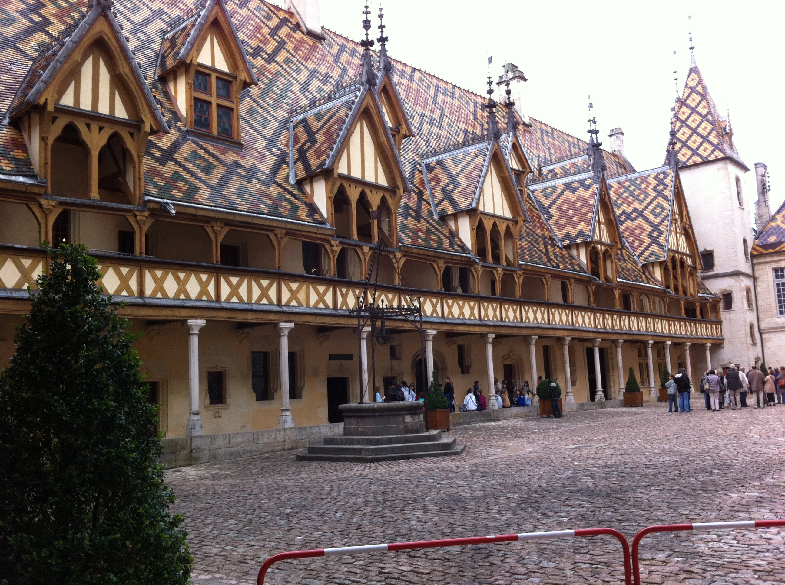

Olivia Abrant
Boulder, CO
United States
olivia@abrant.us
United States
olivia@abrant.us
Hobby
| Name | Experience |
|---|---|
| Reading | 14 years |
| Watching TV shows | 2 years |
| Running | 7 years |
| Singing | 11 years |
Travel
Ontario, Canada
Took a trip to Canada with my family; visited Toronto, Ottowa, Montreal, and Quebec.
New England, U.S.A.
Hit all 6 New England states in a couple weeks with my family.
Shanghai, China
Visited the Shanghai area of China with a tour group; toured various regions near the city.
France

Went to France with a group from high school after senior year; visited Paris, Reims, Nancy, Strasbourg, Colmar, Selestat, and Beaune, and stayed with a host family in Lyon.
Work Experiences
| Position | Term | Description | Contact |
|---|---|---|---|
| Circulation Assistant at Wise Law Library, CU Boulder | Fall semester 2012; Spring semester 2013; May 2014 - present | Re-shelve books according to the Library of Congress Classification system; work the circulation desk; assist patrons with machine and general library issues; keep the library clean and orderly for patron use | Robyn Copeland; robyn.copeland@colorado.edu |
| Student Research Assistant at School of Education, CU Boulder | Spring semester 2014; Fall semester 2014 | Helped elementary school students at Alicia Sanchez Elementary School’s after-school program design their own video games using AgentCubes; encouraged their interest in computer science/technology through interaction and enthusiasm | Susan Jurow; susan.jurow@colorado.edu |
| Circulation Clerk at Denver Public Library | July 2014 - August 2014 | Assisted patrons at the Borrower Services desk and phone line; sorted and processed inbound and outbound circulation materials; handled errors with item check-out and check-in; shelved holds for Central branch patrons; rode on the Bookmobile to provide materials to the surrounding communities | Jeffrey Babcock; jbabcock@denverlibrary.org |
| Digitization Assistant at Wise Law Library, CU Boulder | Fall semester 2013 | Digitized law materials using BookDrive Capture and BookDrive Editor; converted files to PDFs using Adobe Acrobat; kept Wise Law Library website up to date with newly digitized materials using XML and Drupal | Erik Beck; erik.beck@colorado.edu |
Education
| Name | Years | Degree |
|---|---|---|
| Downers Grove South High School | 4 | High school diploma |
| University of Colorado Boulder | 2.5 | B.S. in Computer Science - In Progress |
Portfolio
| Project title | Description | Languages used |
|---|---|---|
| Escape-the-room game | Designed and built a text-based escape-the-room game - Human-Centered Computing Professional Development | Javascript; HTML |
| Bookface website | Created a website called Bookface for book lovers to role-play as characters from their favorite books - Software Methods and Tools | Ruby on Rails |
| Florashere | Building an app for plant-lovers to assist them in taking care of their indoor plants - Object-Oriented Design and Analysis | Java; Android Platform development |
Skills
| Name | Expertise |
|---|---|
| Javascript | beginner |
| HTML | beginner |
| Java | intermediate |
| C++ | intermediate |
| Python | intermediate |
| Microsoft Office | proficient |
Honors
| Name | Year |
|---|---|
| Chancellor's Achievement Scholarship | 2012-2013, 2013-2014 |
| Dean's List | Fall 2013 |
References
| Name | Position | Contact |
|---|---|---|
| Erik Beck | Digital Services Librarian, William A. Wise Law Library, CU Boulder | erik.beck@colorado.edu |
| Elizabeth White | Former Instructor at University of Colorado Boulder | elizabeth.white@colorado.edu |
| Robyn Copeland | Circulation Manager, William A. Wise Law Library, CU Boulder | robyn.copeland@colorado.edu |